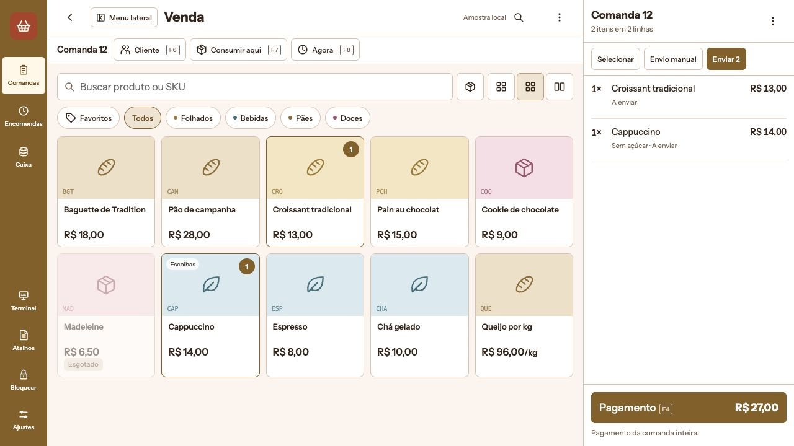
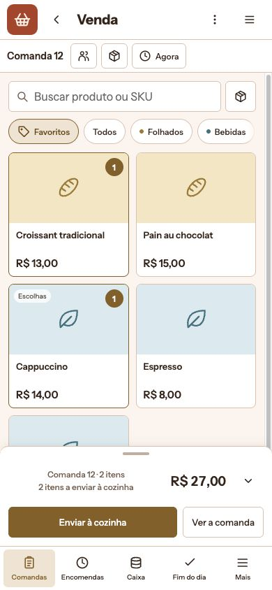
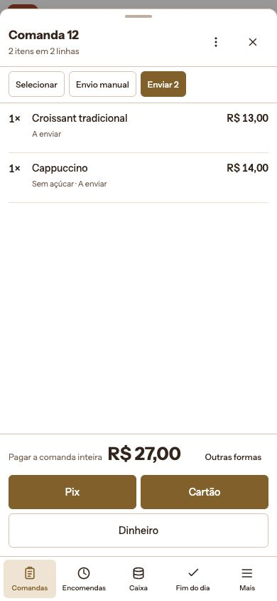

Rodada 1 · PDV · Prévia de composição por tarefa
O PDV continua sendo um posto de atendimento
O quadro de comandas vem antes do lançamento. A grade não vira lista de cards. A comanda continua coluna no desktop e folha no mobile. A cozinha e o pagamento mantêm estados e ações próprios.
As telas abrem limpas, sem este roteiro. Use o menu ⋮ → Sobre esta prévia para voltar aqui. A cada recarga, a amostra volta ao estado inicial.
O que está sendo comparado
Esta é uma reconstrução estática das anatomias atuais, com dados fictícios, para avaliar ajustes de composição. Não é uma captura fiel do runtime atual nem uma proposta de substituir os componentes existentes.
O recorte interativo desta rodada é quadro → venda → comanda/seleção → cozinha → pagamento → resultado. Portas de cliente, recebimento, agendamento, encomendas, terminal e ajustes ficam identificadas, com os limites apresentados no próprio exemplo. Não tratamos seus formulários parciais como aprovados.
Base preservada
- Entrada por comandas; estados Tudo pronto, Não pago, A enviar e Livre.
- Próxima livre, busca por referência/cliente e grade/lista no quadro.
- Tile inteiro lança; favoritos/coleções, busca, leitor e densidade conforme o dispositivo.
- Escolhas, peso, indisponibilidade e quantidade no tile.
- Coluna de comanda com altura inteira e largura ajustável no desktop.
- Folha no mobile com ação do momento, seleção e editor sob demanda.
- Pagamento da comanda inteira, mesmo com linhas marcadas.
- Pix pendente, aprovação na maquininha e troco no resultado.
Ajustes candidatos nesta composição
- Cabeçalho compacto do PDV, com ícone do app no canto no mobile. A busca de produto continua dominante.
- Busca de páginas/apps em diálogo; não acrescentar um segundo campo ao lançamento.
- Sem segunda lateral permanente na venda. Um controle identifica o alcance do menu lateral; a comanda tem sua própria divisória.
- Barra contextual horizontal para cliente, recebimento e quando; coleções também rolam horizontalmente.
- Reticências e fechar sem borda; ações da comanda e das linhas com alvo identificado.
- Erro/aviso semântico no topo, com rascunho mantido quando a ação falha.
Experimente como operador
- No quadro, busque Ana e abra a Mesa 3. Volte e use Próxima livre.
- Na Comanda 12, lance uma baguette tocando o produto inteiro. Abra Cappuccino para ver escolhas. Em Todos, experimente Queijo por kg e o produto esgotado.
- Abra a comanda pela faixa inferior. Toque numa linha, ajuste quantidade e observação. No toque, o numérico aparece no editor, sem ocupar a lista enquanto você lança.
- Selecione duas linhas e revise a transferência para outra comanda. Confira que o pagamento continua da comanda inteira.
- Envie à cozinha. Depois acrescente uma observação à linha enviada e observe a oferta de revisar o reenvio.
- No pagamento em dinheiro, a comanda inicial de R$ 27,00 recebida com R$ 50,00 termina com R$ 23,00 de troco. Abra Nova venda e confira o acesso contextual à gaveta.
- No Pix, validar não significa pago. Use os controles explícitos da simulação para confirmar/expirar; Nova venda mesmo assim mantém o acompanhamento pendente.
- Desktop: ajuste a comanda pela divisória, use setas na divisória ou dê dois cliques para restaurar. Experimente F2, F3, F4, F6–F10 e Enter no pagamento.
Limites que impedem aprovação funcional integral
Sem API, cobrança, PIX utilizável, estoque, impressão, autenticação ou periféricos. Valores e efeitos são fictícios em memória. A simulação não substitui as actions/projections nem o journal offline do produto.
Cliente com conflito/fusão, endereço e taxa, agenda real, cancelamento de cozinha, autorização por PIN, encomendas completas, configurações e fechamento por produto/denominação não estão reproduzidos integralmente. O fechamento demonstra apenas separação e contagem cega, sem esperado/diferença e com limites visíveis. Esses fluxos existentes não estão sendo removidos nem redesenhados por esta amostra.
A composição deve ser julgada pelos percursos acima. Aprovar este recorte não aprova uma substituição integral do PDV. Teclado virtual, leitor físico, toque prolongado, impressão e trabalho real na mesa ainda exigem validação específica.
Fontes e critérios de preservação
PosTabBoard.vue; PosProductGrid.vue; PosProductTile.vue; PosTabHeader.vue; PosCartPanel.vue; PosPaymentWorkspace.vue; PosSaleResult.vue; PosDrawerPulseCard.vue; PosOperatorShell.vue; pages/index.vue; pages/session/closing.vue; presentation/sections.ts; presentation/tabBoard.ts; presentation/saleResult.ts. Deltas relevantes de origin/main e0c22ba1f conferidos na revisão anterior.
Critério: preservar ação, informação, atalho, estado e consequência. Uma simplificação visual que aumenta procura, remove contexto ou muda o significado do ato é regressão, mesmo sem overflow.
Capturas para comparar os formatos
Exemplos da nova prévia, não capturas do app em produção. Abra as imagens para ampliar no celular.





Abrir nova rodada do KDS e Gestor
Somente prévias. Apps, operator-kit, Core e deploy intactos.